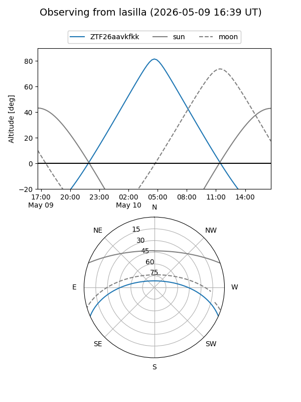
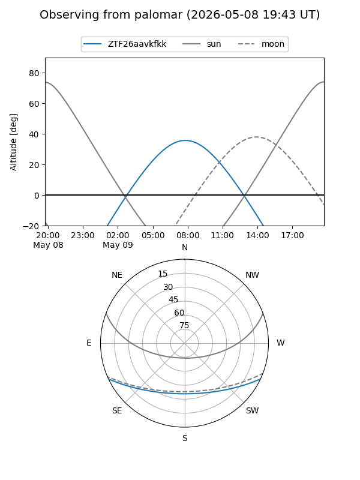

ZTF26aavkfkk
Target ZTF26aavkfkk at 2026-05-09 10:04
Aliases and brokers:
FINK: link
Lasair: link
ALeRCE: link
alt names
ZTF26aavkfkk (ztf,fink_ztf)
Coordinates:
equatorial (ra, dec) = 226.9026,-20.75549
equatorial (HMS+DMS) = 15:07:36.61,-20:45:19.76
galactic (l, b) = (340.9868,+31.87090)
Flags:
Photometry:
last ztfg=18.55
1 ztfg detections
Lightcurve
Visibility


Additional plots